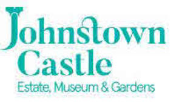

Trade Mark Journal No.2025/050 12 December 2025
UK00004304899 3 December 2025 (9,14,16,25,35,37,41)

International priority date claimed: 11 November 2025
(European Union Intellectual Property Office (EUIPO))
(019274530)
- Class 9
- Electronic publications downloadable; downloadable media; downloadable music files; downloadable image files; downloadable video files; downloadable multimedia files; e-books; electronic publications recorded on computer media; publications in electronic format; electronic sheet music, downloadable; audio books; podcasts; digital storage media; recorded films; cinematographic films; animated films; animated cartoons; pre-recorded compact discs; DVDs; downloadable films; music recordings; audio recordings; video recordings; audio-visual recordings; digital recordings; recorded media; databases; interactive databases; directories (electric or electronic); downloadable computer games; downloadable computer software applications; software applications; computer software platforms, recorded or downloadable; interactive entertainment software; games software; computer programmes for image processing; computer programs for editing images, sound and video; computer programmes for interactive television and for interactive games and/or quizzes; instruments for the transmission of sound; instruments for the transmission of images; instruments for the reproduction of sound; instruments for the reproduction of images; decorative magnets; mouse pads; glasses; theatre glasses; covers for smartphones; covers for tablet computers; spectacle cases; headphones; spectacle chains; spectacle cords; measuring instruments; alarms; wearable activity trackers; digital photo frames; scientific apparatus and instruments.
- Class 14
- Jewellery; medals; coins; jewellery charms; keyrings; watches; clocks; horological instruments; chronometric instruments; key chains; cuff-links; Tie pins; Dress ornaments in the nature of jewellery; precious metals, unwrought or semi-wrought; precious metals; alloys of precious metal; precious stones; semi-precious stones; jewellery boxes; jewellery rolls; works of art of precious metal.
- Class 16
- Printed matter; printed promotional material; printed publications; events programmes; souvenir programmes; Maps (Geographical -); illustrated wall maps; guide books; plans; activity books; colouring books; drawing pads; children's books incorporating an audio component; educational and instructional material; diaries; posters; photographs; pictures; postcards; portraits; graphic prints; paintings; calligraphic works; printed music; song-books; albums; announcement cards; Art and modelling materials and media; modelling materials; bookmarkers; calendars; drawing instruments; embroidery design patterns; engravings; paper flags; greeting cards; handkerchiefs of paper; lithographic works of art; paperweights; papers for painting and calligraphy; paper gift bags; paper party decorations; pencil cases; pencil sharpeners; pens; pencils; rubber erasers; rulers; scrapbooks; seals [stamps]; stationery; stencils [stationery]; table linen of paper; trading cards; transfers [decalcomanias]; writing instruments; Works of art and decorations, including figurines, made primarily of paper or cardboard, and architects’ models; wrapping paper; gift wrap; gift tags; paper ribbons, other than haberdashery or hair decorations; sewing patterns; teaching materials [except apparatus]; book ends.
- Class 25
- Clothing; headgear; footwear.
- Class 35
- Retail services, online retail services and wholesale services relating to printed publications, printed matter, calendars, stationery, drawing materials and materials for artists, graphic prints, educational and instructional material, arts crafts and modelling equipment, works of art, writing materials, recorded media, music, films, clothing, footwear, headgear, fashion accessories, animal apparel, games, toys, playthings, novelties, gifts, magnets, stickers, greeting cards, jewellery, keyrings, trinkets, household decorations, household linens, household textile goods, homewares, household utensils, cookware, tableware, haberdashery, furnishings, leatherware, umbrellas, wallets, cosmetics, toiletries, perfume, body care products, laundry preparations, candles, household fragrances, bags, carrying cases, furniture, frames, electronic goods, computer accessories, foodstuffs, beverages and horticultural products; conducting of commercial events; organisation of trade fairs; organization of exhibitions for commercial or advertising purposes; promotional event management; publication of advertising texts; rental of advertising space; business promotion services; arranging and conducting of business meetings.
- Class 37
- Building restoration; restoration of architectural works; building refurbishment services; renovation of property; interior refurbishment of buildings; building maintenance; building repairs; property maintenance; furniture restoration, repair and maintenance; repair and restoration of household articles; maintenance and restoration of works of art; maintenance and restoration of fixtures and fittings for buildings; repair of ironmongery; repair and maintenance of household furnishings; construction of public facilities; cleaning of property; building consultancy services; building construction consultancy services; consultancy services relating to the repair of buildings; construction consultancy; construction project management services; building construction advisory services; building project management services; advisory services relating to the renovation of property; advisory services relating to building refurbishment; advisory services relating to the maintenance of buildings; advisory services relating to the repair of buildings; advisory services relating to the maintenance of fixings; advisory services relating to the construction of buildings and other structures; consultancy, information and advisory services relating to the construction of public works.
- Class 41
- Provision of visitor attractions for cultural purposes; conducting guided tours; museums; museum exhibitions; running of museums; museum services; Exhibitions (Arranging -) for cultural purposes; presenting museum exhibitions; cultural activities; administration [organisation] of cultural activities; cultural services; museum facilities (providing -) [presentation, exhibitions]; arranging of festivals for cultural purposes; Organisation of cultural events; conducting of cultural events; providing cultural activities; organising of recreational events; organising community cultural events; information relating to cultural activities; arranging of guided educational tours; conducting guided tours of cultural sites for educational purposes; educational services; conducting of exhibitions for entertainment purposes; providing recreational areas in the nature of play areas for children; interactive entertainment; interactive entertainment services; amusement park and theme park services; arranging and conducting of entertainment, sporting and cultural activities; organisation of entertainment and cultural events; organisation of exhibitions for cultural or educational purposes; organising of festivals; organisation of competitions [education or entertainment]; providing educational demonstrations; organisation of educational events; arranging and conducting of classes; arranging and conducting of conventions; arranging and conducting of workshops; arranging and conducting of symposiums; production of live entertainment events; corporate hospitality (entertainment); special event planning; art exhibitions; providing cinema and theatre facilities; audio-visual display presentations; arranging for students to participate in educational activities; arranging for students to participate in recreational activities; rental of cultural facilities; Rental of recreation facilities; entertainment services; arranging and conducting of concerts; presentation of live entertainment performances; production of shows; cinema presentations; live entertainment; film production, other than advertising films; production of radio and television programmes; production of audio-visual presentations; production of music; publication of online guide books, travel maps, city directories and listings for use by travellers, not downloadable; Publication of electronic magazines; providing online publications, not downloadable; providing online videos, not downloadable; providing digital sound recordings, not downloadable, from the internet; multimedia publishing; writing of texts, other than publicity texts; publication of texts, other than publicity texts; publication of printed matter and printed publications; online interactive entertainment; provision of online computer games; electronic games services; publishing services; production of podcasts; ticketing and event booking services; reservation, information and search services for cultural and sporting activities and events; provision of recreation information; providing information about cultural activities; information and advisory services relating to entertainment; provision of listings and information in relation to sporting, cultural and entertainment events and activities.
The Irish Heritage Trust CLG
Representative: Michael Fitzsimons